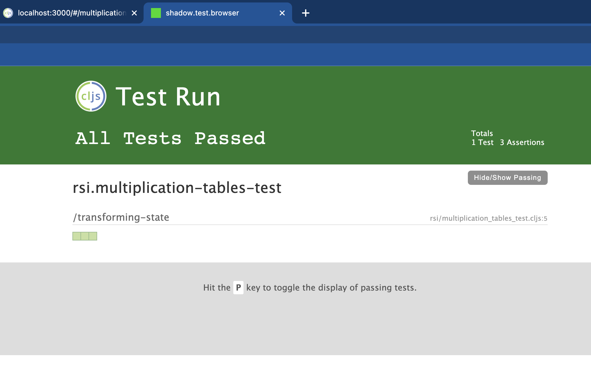

When I used to work on front ends based on JavaScript or TypeScript, I usually had Karma running in watch mode while developing. Each time I saved a file, all (unit) tests would run. This would give me a short feedback loop, letting me know quickly when I was unintentionally breaking things and constantly indicating whether what I was creating matched its specifications as defined by the tests. In other words, tests were used to prevent regressions, but also as a tool to quickly see whether I was building the right things.
In the last few years, I've been using Clojure and ClojureScript to create prototypes and utilities at work as well as hobby projects and apps for personal use. Because of the size and nature of these applications, I wasn't too worried about regressions. Because Clojure and ClojureScript have excellent support for REPL-driven development, the need for tests as a means for quick feedback also disappeared. As a result, I wrote a few tests for these applications, but not nearly as many as I used to.
Deep down inside, however, I knew I would have to invest some time into learning more about testing Clojure and ClojureScript applications at some point. I wouldn't want to work in a team that produced software without decent test coverage. I should hold myself to the same standard. This week, I decided to sit down and take some time to look into different ways to execute tests for ClojureScript apps powered by shadow-cljs. As you may know, shadow-cljs is one of the two de facto standard tools for creating ClojureScript apps. The other is Figwheel.
There are a number of different ways to execute tests for a shadow-cljs based ClojureScript application. This blog post covers three of them and a number of variations. There are more alternatives, but I'll probably stick with a combination of the following for now.
shadow-cljs supports a number of build targets for building and running tests. One of them if the :node-test target, which will gather all tests from namespaces that match a given regex and produces a build that includes these tests and a test runner for executing them.
The following configuration is the absolute minimum you need to get started. Additional configuration options are described in the user guide for shadow-cljs.
...
:builds {...
:test {:target :node-test
:output-to "out/node-tests.js"}
...}
...
Given the configuration above, executing npx shadow-cljs compile test will result in the creation of a file named out/node-test.js, which can be executed with node.
npx shadow-cljs compile test
node out/node-test.js
Executing the file leads to output like this when there are no failures:
shadow-cljs - updating dependencies
shadow-cljs - dependencies updated
[:test] Compiling ...
[:test] Build completed. (60 files, 1 compiled, 0 warnings, 2,28s)
Testing rsi.multiplication-tables-test
Ran 1 tests containing 3 assertions.
0 failures, 0 errors.
When there are failures, the output will show which assertion failed and why:
[:test] Compiling ...
[:test] Build completed. (60 files, 2 compiled, 0 warnings, 2,34s)
Testing rsi.multiplication-tables-test
FAIL in (transforming-state) (rsi/multiplication_tables_test.cljs:8:11)
correct answer on time
expected: (= {:question [1 2], :score 2, :highscore 22, :mode :against-the-clock, :wrongly-answered #{}, :deadline-passed? false} (process-answer {:question [2 3], :score 1, :highscore 1, :wrongly-answered #{}} "6" [1 2]))
actual: (not (= {:question [1 2], :score 2, :highscore 22, :mode :against-the-clock, :wrongly-answered #{}, :deadline-passed? false} {:question [1 2], :score 2, :highscore 2, :deadline-passed? false, :wrongly-answered #{}, :mode :against-the-clock}))
Ran 1 tests containing 3 assertions.
1 failures, 0 errors.
If all tests pass, the exit code is zero. If any test fails, the exit code is one. That makes running tests like this a good option for CI servers.
If you prefer running tests in a headless browser instead of node, there's also a build target for Karma. As long as your test don't touch any code that uses browser-only APIs, I'd say that running them in node is fine. Tests like the following will fail when run with node, however:
(deftest log
(is (= 1 ((fn [] (js/alert "1") 1)))))
Especially when combining unit tests with end-to-end tests executed via something like Cypress or Etaoin, I think it's perfectly reasonable to restrict the unit tests to testing pure functions and testing browser-specific functionality with the end-to-end tests.
Functions that make use of browser-only APIs that can't be tested efficiently via end-to-end tests could be extracted into a separate library, which could then be tested via Karma. This could make sense for functions that use localStorage, sessionStorage, cookies, or a canvas, for example.
The :node-test target has an optional configuration option :autorun. When set to true, all tests will be executed automatically after creating a build. Using this option in combination with the watch build command makes it possible to automatically run all tests each time a file is changed. You can either include the :autorun option directly in your configuration, or add it later on the command line when starting the watch build:
npx shadow-cljs watch test --config-merge '{:autorun true}'
There's another way to automatically run all tests each time a file is changed. The :browser-test build target can be used to generate a web page that shows the results of your tests. Starting a watch build for this build target will regenerate this page each time a file is changed. The configuration below is enough to get you started, but there are additional options.
...
:builds {...
:browser-test {:target :browser-test
:test-dir "out/test"}
...}
:dev-http {...
3001 "out/test"
...}
...
The configuration above will produce the web page containing test results in the folder out/test. It also sets up an HTTP server on port 3001 that will serve this page.
If all tests pass, the page will look like this:

If any of the tests fail, the page will look like this:
Essentially, you'll get the same feedback as you'd get on the command line.
Because the favicon changes from green to red when any of the tests fail, you don't need to keep a close eye on this page all the time during development. As long as you have it open in a browser tab, you'll notice the color change soon enough when something breaks.
For some reason, I had high hopes for this final way of running tests. It took me quite some time before I understood what I had to do to run tests from the REPL. In the end, I wonder if there will be situations where I prefer this method over the ones above.
The library cljs.test contains a macro run-all-tests, which runs all tests in all namespaces. When you start a watch build for your shadow-cljs app and execute this macro in the REPL, you'll most likely see a list of test results for all libraries used by your app. What it probably won't show are the test results for your own app.
Because the main entrypoint for your app won't refer to any of your test namespaces, these namespaces can't be found by run-all-tests. Since you don't want the main entrypoint of your app to refer to any test namespace, you'll need another way of including them in your development build.
One way of achieving this involves the cljs.user namespace. This namespace is automatically loaded in each ClojureScript REPL started by shadow-cljs. The example below shows the content of a file named cljs/user.cljs that loads the namespaces cljs.test and rsi.multiplication-tables-test. As a result, the namespace rsi.multiplication-tables-test will be found by run-all-tests.
(ns cljs.user
(:require [cljs.test]
[rsi.multiplication-tables-test]))
(comment
(cljs.test/run-all-tests)
(cljs.test/run-all-tests #"rsi.*-test"))
The last line of the snippet above shows how you can restrict run-all-tests to the namespaces containing the tests for your app. Most likely, you're not interested in seeing the test results for all your dependencies.
Many editors that support Clojure offer functionality to trigger the evaluation of custom snippets of Clojure when a certain combination of keys is pressed. You could use that functionality to evaluate something like (cljs.test/run-all-tests #"rsi.*-test") each time you want to run your tests. Make sure to evaluate test definitions after you've changed them, however, before running the tests. Otherwise, run-all-tests will execute the previous version of your tests.
As mentioned above, I'm not sure which combination of these methods I'll use in the future. I'll definitely run tests on the command line for CI builds. I'll probably won't be running tests in the REPL very often. Evaluating changed test definitions before running tests requires additional key presses, and there's some extra work needed to keep cljs/user.cljs up to date.
Published: 2023-01-27
Tagged: Clojure ClojureScript
Comments